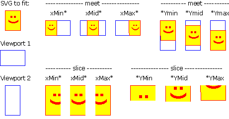

viewbox는 viewport를 기준으로 영역을 재정의 한다.
min-x, min-y는 viewport를 기준으로 원점(0,0)을 재정의하며 width, height는 크기를 재정의 한다.
alignment : viewport를 기준으로 정렬
meet : 가로/세로 비율을 유지하면서(작은쪽을 기준으로) 전체 viewBox가 viewport 안에 보이도록 한다. 뷰박스가 최대한 확대될 수 있도록 한다.
slice : 가로/세로 비율을 유지하면서(큰쪽을 기준으로) 전체 viewport가 viewBox에 보여질 수 있도록 한다. 뷰박스가 최대한 축소될 수 있도록 한다.
mone : 비율유지 안하고 viewport에 맞게 확대/축소 된다.
[참조 1] interactive-svg-coordinate-system
[참조 2] PreserveAspectRatio
preserveAspectRatio를 설정하지 않아도 기본적으로 종횡비유지(preserveAspectRatio="xMidYMid meet")가 적용되어 작은쪽에 맞게 비율이 조정되고 preserveAspectRatio를 none으로 설정할 경우 비율이 유지 되지않고 viewport에 맞게 조정된다.